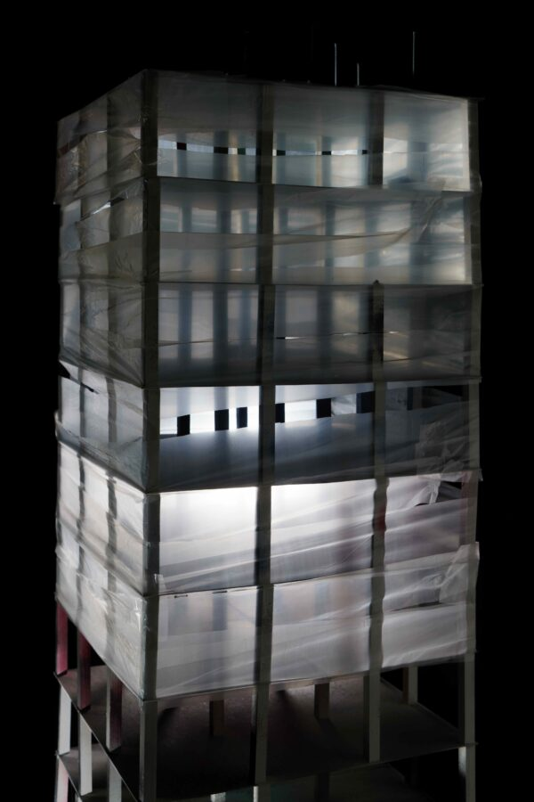

Ross Sawyers: The Future Still Isn’t What It Used to Be
ROSS SAWYERS | THE FUTURE STILL ISN’T WHAT IT USED TO BE | FEBRUARY 1 – MARCH 7, 2026
The Riverside Arts Center is pleased to present Ross Sawyer’s solo exhibiton, The Future Still Isn’t What It Used to Be curated by Kristin Taylor in the Freeark Gallery and Sculpture Garden. Please join us for an opening reception on Sunday, February 1, 2026 from 3:00 to 6:00 PM followed by a private cocktail hour across the street at the Quincy Street Distillery. An artist talk will be held Saturday, February 21, 2026 at 2:00 PM. The exhibition will be on view Thursdays, Fridays, and Saturdays 1:00 – 5:00 PM through March 7, 2026.
The book release of Eleven Towers by Ross Sawyers, published by Skylark Editions: Chicago, will coincide with the exhibition. Copies will be available for purchase at the Riverside Arts Center.
Opening Reception: Sunday, February 1, 2026, 3:00 – 6:00 PM
Please join us afterwards for a private cocktail hour at the Quincy Street Distillery
Exhibition Dates: February 1 – March 7, 2026
Exhibition on view: Thursdays, Fridays, and Saturdays 1:00 – 5:00 PM
Artist Talk: Saturday, February 21, 2026, 2:00 PM —